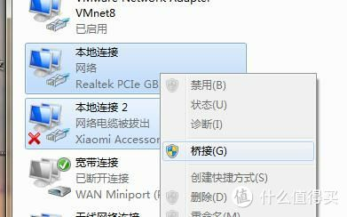
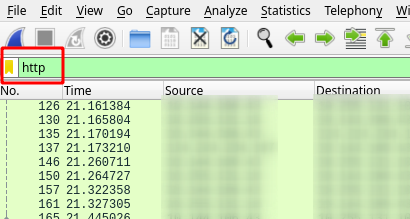
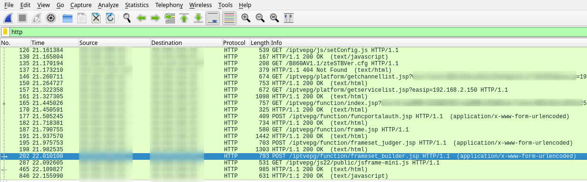
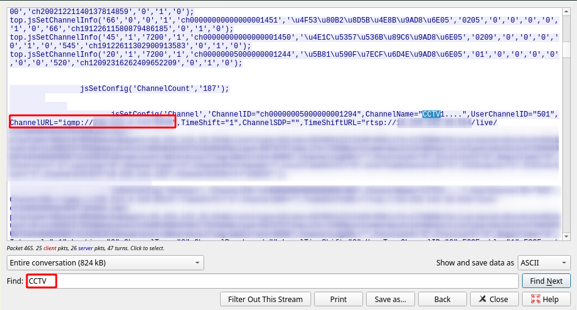
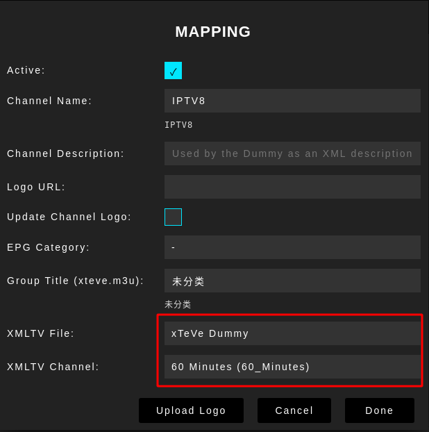
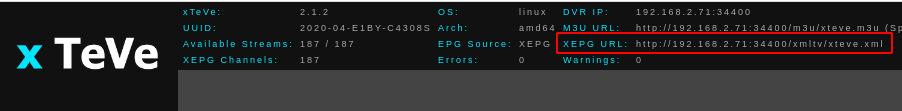

IPTV与Plex配置
目录
最终效果
最终效果是在任何设备/终端上都可以观看 IPTV，不再仅仅局限于 IPTV 机顶盒。并且使 IPTV 与 Plex 集成，实现 IPTV 在显示预告、录像等功能。
不过也有一定的缺点，不使用 IPTV 机顶盒则就不能使用 IPTV 的回放和点播功能了，不过录像可以在一定程度上弥补该缺点。
准备
- IPTV 的拨号账号
- 一台笔记本电脑
- USB 网卡
- 2 根网线
相关概念
- 光猫破解破解光猫是为了设置 vlan、lan 口绑定、开启组播等设置。
- Plex PASS 顾名思义你必须拥有 Plex 的 PASS 会员，因为这个功能必须要会员才可以。有人会问试用期的 PASS 可不可以使用这个功能答案是：可以
- udpxy 这是一个将组播源转换成单播的服务，为什么要使用这个功能，因为 PLEX 是不支持组播的所以要靠他来转换成多播。那么该如何使用 udpxy 后面会详细解释
- xTeVe 大致可以理解为是一个虚拟调制解调器的服务，为了让 Plex 识别信号用的,2019 年 10 月后 因 PLEX 官方停止了 EPG 服务。
- m3u 是一个频道的播放列表里面存放着播放源。
- XEPG EPG 是一个节目指南在 2019 年 10 月前 Plex 一直提供者此项服务但好景不长在 10 月后停止了服务。
破解光猫
后面的教程中可能会需要破解光猫的超级用户。
一般光猫的超级用户
通常光猫都有一些普遍的用户名和密码，但是实际上大多数都已经被改了，能用的都是撞运气。
一般光猫的超级用户：用户名：telecomadmin 密码：nE7jA%5m （个人测试可以直接使用这个账号与密码）
一般光猫的特权用户：用户名：CUAdmin 密码：cuadmin
BCM 版 HG261 光猫的破解方法
IPTV
单线复用 IPTV 的两种方法
双线双拨等的方法就不在此介绍了。
公网线路
有的服务商可以让 IPTV 直接连到公网中，该方法的好处是配置简单，不用配置额外的 VLAN，有些路由器也不支持配置 VLAN。直接在路由器上使用 IPTV 的账号进行拨号即可。缺点是观看 IPTV 会占据一部分公网的带宽。本文章就是使用的该方法。
IPTV 内网线路
使用 IPTV 内网线路的优点是不占据公网的带宽，一般 IPTV 内网线路会专享 50M 左右的带宽，用来观看也仅仅能观看 IPTV。缺点是该方法配置略微有点麻烦，且需要一个支持 VLAN 的路由器，如 openwrt 系统的路由器。
IPTV 抓包直播源
这里我们采用一个比较简单的办法，使用双网口笔记本桥接光猫与 IPTV 机顶盒进行抓包：
笔记本安装上 win10 系统，再安装 Wireshark、VLC Player、EmEditor 等软件（使用其他操作系统也能够抓包，大致步骤类似，具体内容就不复述了）。注意这里 Wireshark 可能需要使用 WinPcap 库，而不是 Npcap，因为 Npcap 可能抓不到桥接的网络包，另外在安装 Wireshark 时也需要把所以协议都选上。完成以上操作后，将 USB 网卡连接到笔记本上，使用一根网线将笔记本的 LAN1 口与光猫的 IPTV 口相连（如果你的 IPTV 提供商支持公网，那么连接光猫其他 LAN 口也可以），一根网线连接笔记本的 LAN2 口与 IPTV 机顶盒。进入 WIN 中的 网络与共享中心 – 更改适配器设置 里将网卡同时选中，选择 桥接 。

关闭电脑中的其他网卡，关闭 IPTV 机顶盒电源，打开 Wireshark，在主界面中打开 本地连接 2 ，也就是外接的 USB 网卡，就开始监控该网口的数据包了。开启 IPTV 机顶盒电源，使用遥控器进入 IPTV 主页面并打开任意一个频道，再关闭 IPTV 机顶盒。这时我们需要的数据已经应该全部抓捕到了。
现在，我们需要对抓取的数据包进行筛选。首先在 Wireshark 的搜索栏中输入 http：

然后在右侧的 Info 一列中寻找 /iptvepg/function/framset_builder.jsp

找到之后在上面点右键，选择 追踪流 – HTTP 流 。
其中内容很多，可以直接在下面搜索框中以 CCTV 为关键字搜索。就可以快速定位到相关信息，并注意 ChannelURL 等号后面的地址，形如 igmp://xxx.x.xx.xx:xxxx 就是 cctv 的组播地址。

有的地址之后就可以拿来测试了，进入 网络与共享中心 删除刚刚建立的网桥，使用 IPTV 的拨号账号在该电脑上进行拨号，并挑选一个刚刚抓取的组播地址，将其开头的 igmp 替换为 rtp，让 VLC 使用该地址进行播放。不出意外就可以直接在电脑上观看 IPTV 了。（注意，有的系统需要修改强制发送 IGMPv2 协议才能正常观看。）
接下来我们把抓取的 HTTP 数据流以 RAW 的形式保存下来，并用 EmEditor 或其他编辑器以 GB2312 的编码格式将其打开。删除掉前后无用的内容，使用正则替换将 .*ChannelName="(.*)",UserChannelID="(.*)",.*(igmp.*)",TimeShift=.* 替换为 #EXTINF:\2,\1\r\n\3 。
就会得一个比较规整的播放列表了，先将其保存为.m3u 文件。至此抓包部分已经完毕了。
路由器设置
保持机顶盒关闭，在路由器中使用 IPTV 账号进行双拨。梅林系统的具体设置为：外部网络（WAN） -> 双线路 -> 开启双线路 -> 设置首选 WAN 为 WAN，第二 WAN 为 Ethernet LAN/LAN Port X，开启 Multiple PPPd support，双线路模式选择负载均衡。再开启路由规则，添加 192.168.2.0/24（本地 IP 地址范围） -- all -- 首选 WAN 和 all -- 234.XXX.XXX.XXX（组播地址范围） -- 第二WAN 。 再到互联网连接页面中，WAN 类型选择 Ethernet LAN，输入 IPTV 拨号账号。至此完成单线双拨。
再进入内部网络（LAN） -> IPTV，可选择性的开启 IGMP Proxy 与 IGMP Snooping，并设置 udpxy 的端口，如 10888。设置完毕后打开浏览器，输入 192.168.2.1:10888/status（192.168.2.1 为路由器 IP 地址），可以查看 udpxy 的运行状态，注意其中的组播地址（Multicast address），如果该地址不正确，则需要 ssh 进入路由器手动启动 udpxy，如： /usr/sbin/udpxy -m ppp1 -p 10888 -B 65536 -c 10 -a br0 。
制作 m3u 文件
打开之前保存的.m3u 文件，在文件最前面加上 #EXTM3U 。然后使用将其中所有的 igmp:// 替换为 http://192.168.2.1:10888/udp/ 并保存。再将该文件上传到 http://epg.51zmt.top:8000/ 以生成带有台标以及 EPG 的 m3u 文件。再次打开带有 EPG 的 m3u 文件，删除其中的冗余信息，以免在后续的使用中无法正确识别。
将最终修改好的该文件传输到 vlc（PC 平台）或 Cloud Steam（iOS 平台）后，就可以正常观看 IPTV 了。
Plex
xTeVe
由于 Plex 不支持直接使用 m3u 文件播放，且 Plex 官方在 19 年 10 后停止了 EPG 服务，所以需要通过 xTeVe 实现在 Plex 中播放 IPTV。
xTeVe 可以使用 docker 进行搭建：
docker run -d --name=xteve -p 34400:34400 -v /srv/data/xteve:/home/xteve/.xteve --restart always bl0m1/xtevedocker:latest
之后进入 http://192.168.2.71:34400/web/ ，对 XTeVe 进行配置（其中 192.168.2.71 为 xTeVe 服务所在的机器 IP）。
进入 xTeVe 后点击 Playlist -> New，导入之前制作好的 m3u 文件。再进入 Setting -> EPG Sources 改为 XEPG，Stream Buffer 改为 FFmpeg 或 VLC，进入 XMLTV -> New，添加 XMLTV 文件，如 http://epg.51zmt.top:8000/e.xml 。再进入 Mapping，将所有的频道和节目表一一正确关联起来，使得所有的 Mapping 显示正常的绿色，而不是红色。如果有的频道在节目表中没有对应的信息，则将其设置为 xTeVe 的虚拟节目表。配置完所有频道后，xTeVe 的配置就完成了。
（注：如果 xTeVe 不能正确识别 m3u 文件中的频道，则说明 m3u 文件中仍有冗余的信息没有删除干净）

Plex
进入 Plex 的设置页面，选择最下方的 Live TV & DVR -> 添加设备，输入 xTeVe 的地址，如 192.168.2.71:34400 ，之后一路选择继续，直到 XMLTV 指南页面，这里填入 xTeVe 的 XEPG 地址，该地址可在 xTeVe 网页中找到：

再一路继续到最后，等待 Plex 读取完节目表信息，就可以在 Plex 主页 Live TV & DVR 选项中看到电视节目了。
TODO
- IPTV 机顶盒正常使用
- IPTV 内网线路单线双拨或 Internet/IPTV 双线双拨